Crystal Pantomime: An unpublished play by Mina Loy
January 29, 2010, 10 p.m.
Poetry Project at St. Mark’s Church, 131 E. 10th St., New York, NY
Mina Loy’s (1882 – 1966) unpublished play, Crystal Pantomime, will be performed live, from beginning to end, as curated by Kari Adelaide Razdow. Set as “an evanescent dream world,” Crystal Pantomime will be read by a simultaneous braiding of several voices accompanied by a film installation and performances by Vanessa Albury, Crystal Curtis and Marthe Ramm Fortun, in three separate acts. Other participants include: Sorine Anderson, Juliet Jacobson, Alex McQuilkin, and Mary Austin Speaker. Mina Loy of the Lost Generation was a luminous writer and visual artist whose interdisciplinary practice is reflected in this polyphonic presentation. The participating artists interpret Crystal Pantomime through film, drawing, sculptural installation and performance.
Crystal Pantomime includes wisps of illumination that portray Loy’s visual imagination, with fantastical archetypes that appear then fade, dancing enchantments of shadow and light, and metaphors that continually shapeshift. Crystal Pantomime presents a seductive cerebral galaxy where reality wanders toward a timeless wild surmise. Loy’s imagery is eternally suspended as an internal chamber of mythology with rhythmic wooing, artificial feathery light; and, as Loy writes, “that stirring of the imagination at dusk.” Crystal Pantomime is an enchanting glimpse into Loy’s contortionist straddle of visual, poetic, and mystical realms. (Acknowledgment to: Mina Loy Papers. Yale Collection of American Literature, Beinecke Rare Book and Manuscript Library). The project is generously supported by the Royal Norwegian Consulate General in New York.
Chorus of readers:
Kari Adelaide
Sorine Anderson
Juliet Jacobson
Alex McQuilkin
Mary Austin Speaker
Scene One contributing artist:
Vanessa Albury
Scene Two contributing artist:
Crystal Curtis
Scene Three contributing artist:
Marthe Ramm Fortun
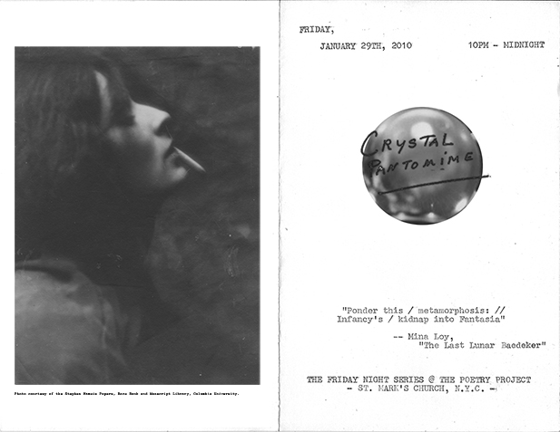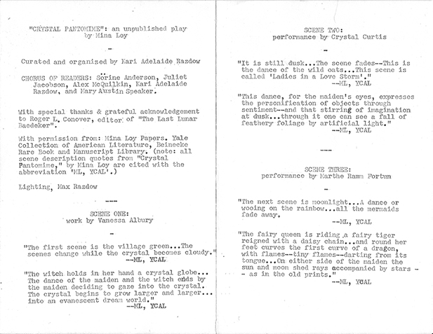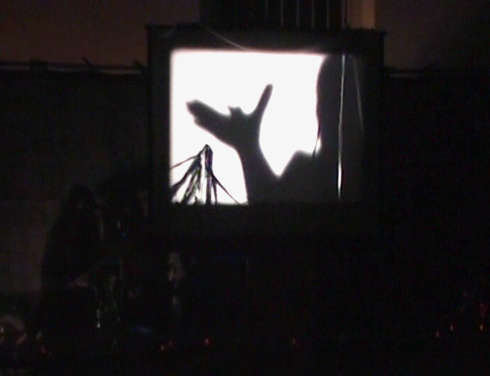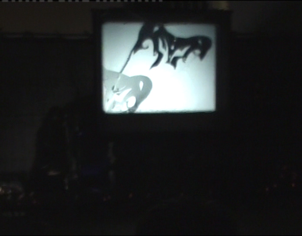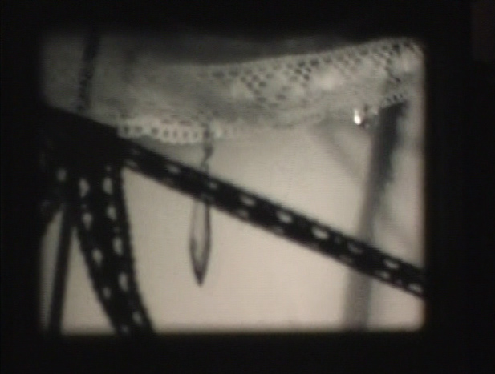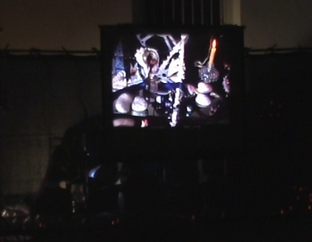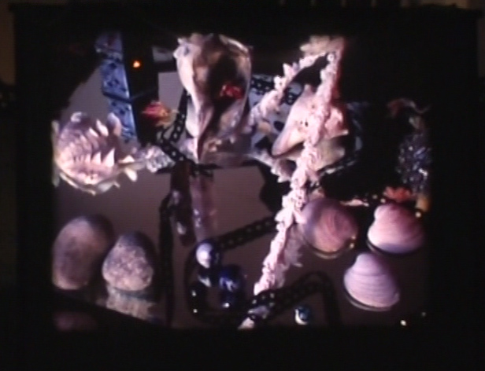
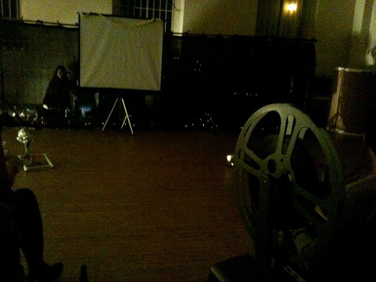
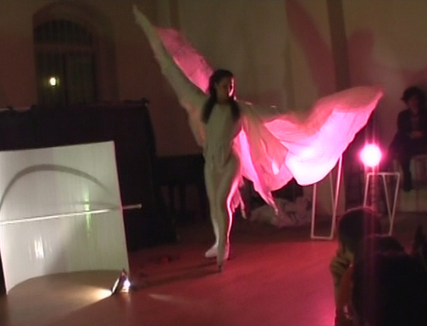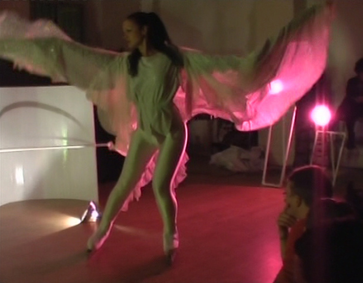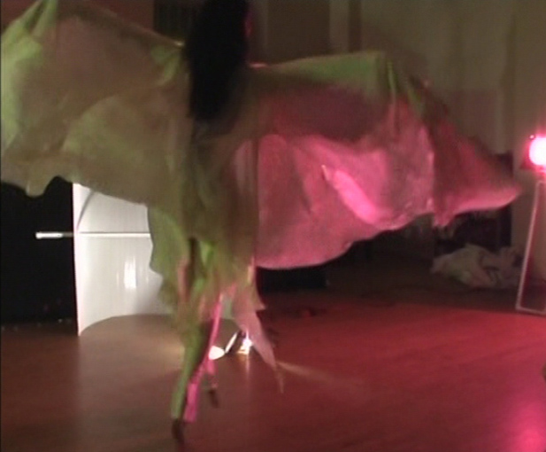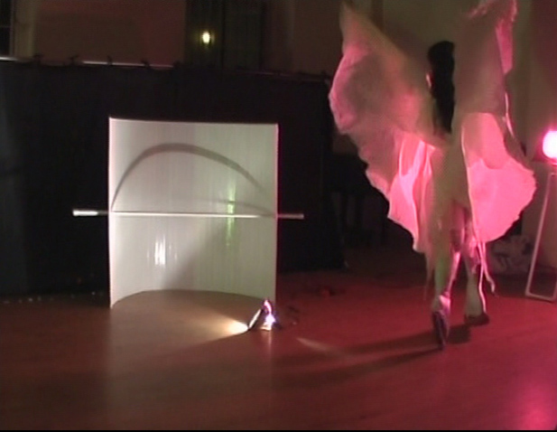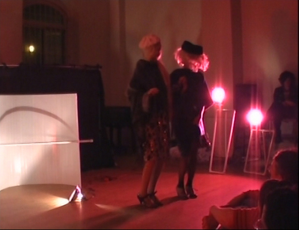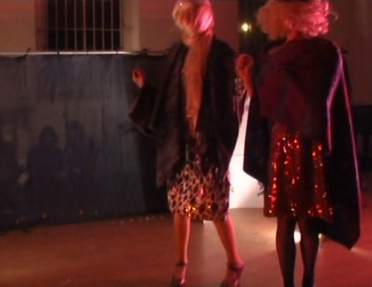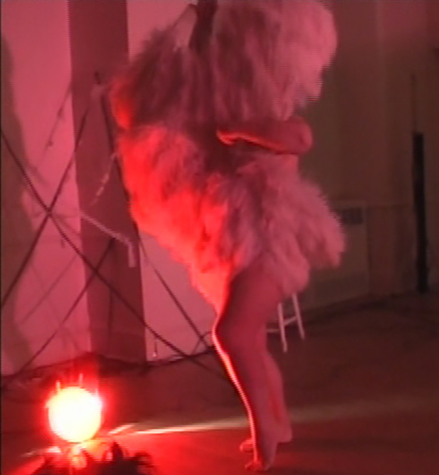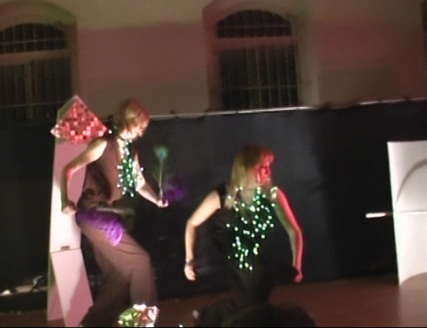
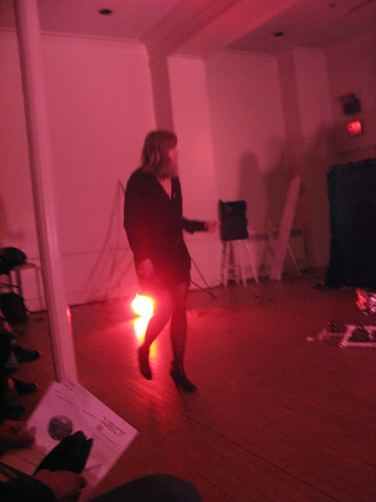
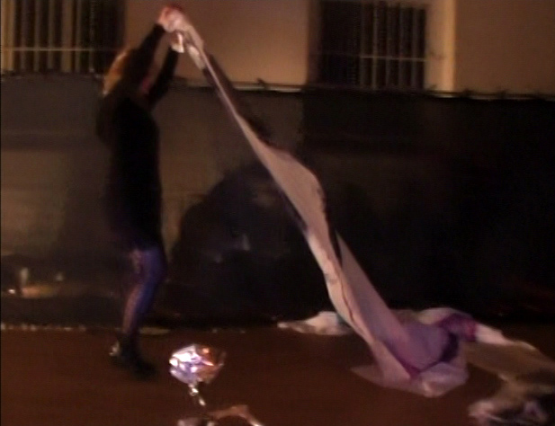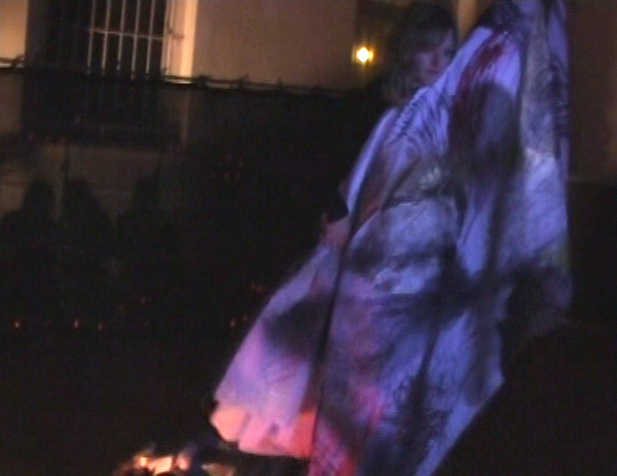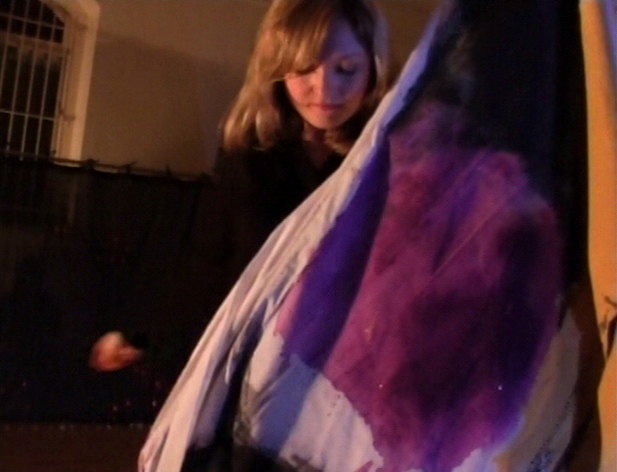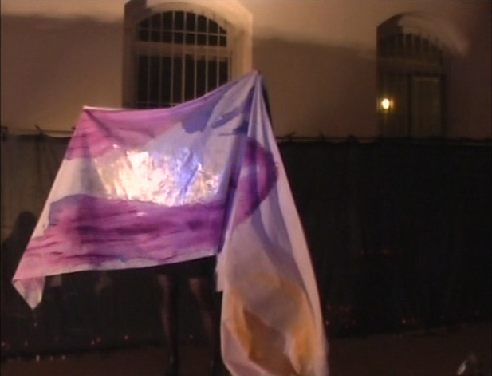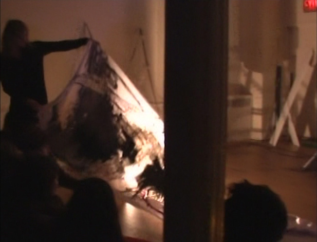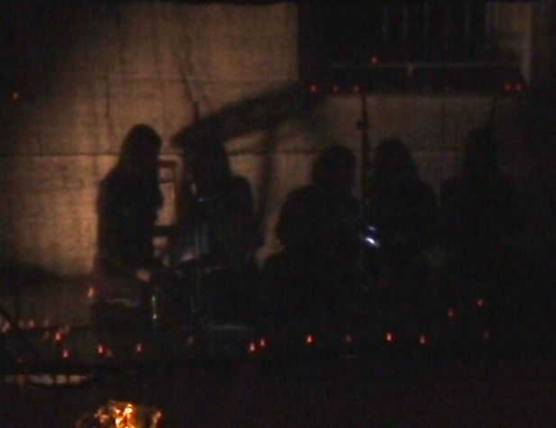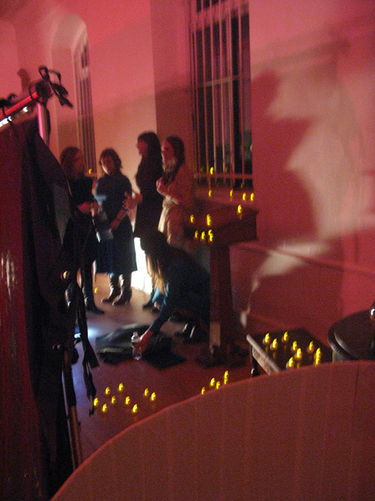